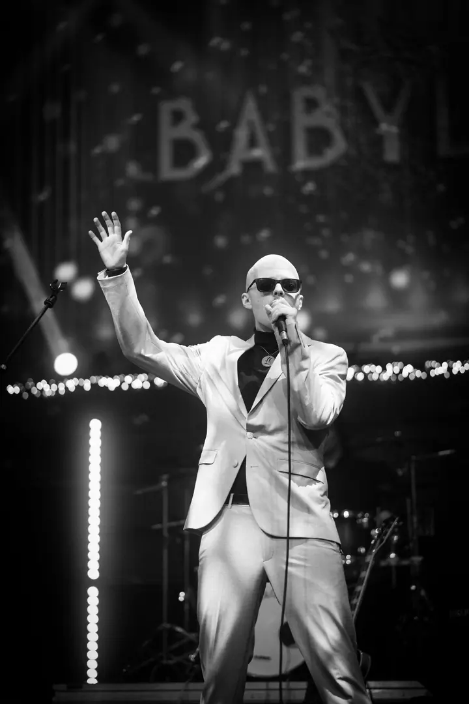
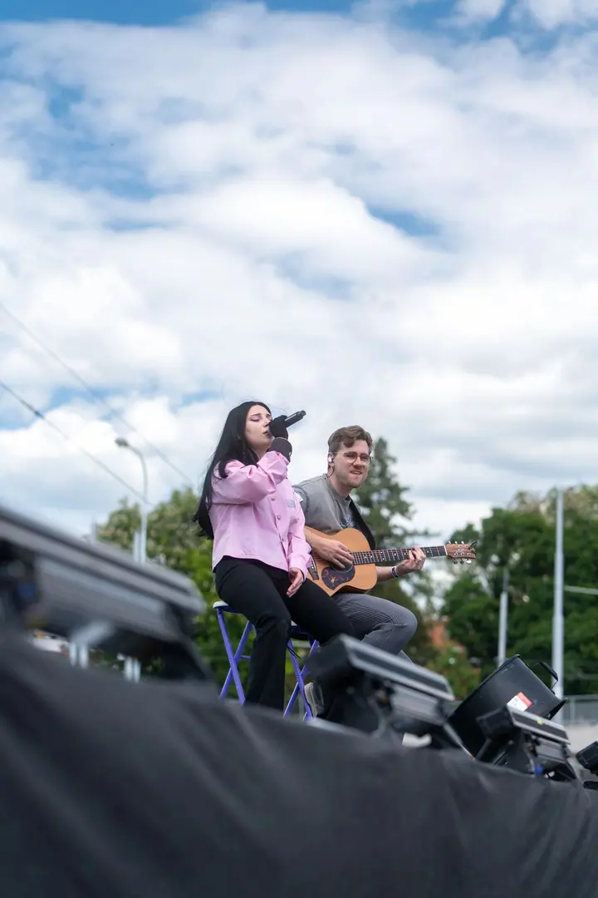
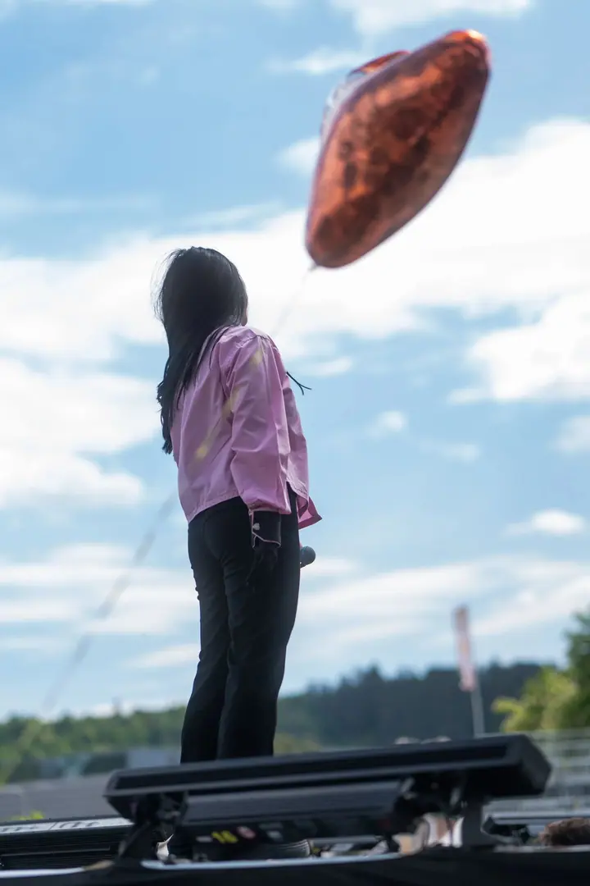

01 / 04
Koncerty
Koncerty fotím a natáčím nejraději. Hlídám světla na pódiu, energii kapely i to, co se děje pod pódiem v publiku.
Zeptat se na termín→


Hudba a lidé z první řady
Zeptat se na termín →(01) Ahoj
Jmenuji se Štěpán Vašků, jsem fotograf a videomaker z Brna a nejčastěji mě potkáte u pódia . Fotím a natáčím koncerty a kulturní akce a k tomu tvořím videoklipy.
(02) Co dělám
01 / 04
Koncerty fotím a natáčím nejraději. Hlídám světla na pódiu, energii kapely i to, co se děje pod pódiem v publiku.
Zeptat se na termín→02 / 04
Festivaly, studentské slavnosti a další kulturní akce zachytím v celé jejich atmosféře, od programu na pódiu po lidi v davu.
Zeptat se na termín→(04) Postup
Od první zprávy po hotovou galerii.
Krok 1 z 4
Napište mi nebo zavolejte, o jakou akci jde, kdy a kde se koná a jestli chcete fotky, video, nebo obojí.
Krok 2 z 4
Projdeme si program a harmonogram, abych věděl, kdy se odehrává to hlavní a kde budu stát.
Krok 3 z 4
Pohybuji se mezi pódiem a publikem tak, abych nikoho nerušil a zachytil atmosféru celé akce.
Krok 4 z 4
Fotky vyberu a upravím, video sestříhám. Termín předání domluvíme předem podle rozsahu akce.
Nejlepší místo na koncertě je u pódia.
(05) Za objektivem
Pocházím ze Vsetína, malého města v srdci Valašska, na které nedám dopustit. Dnes žiji v Brně, kde hledám nové příležitosti a výzvy, které mě posouvají dál.
Focení a natáčení se věnuji od roku 2018. Hlavně dokumentuji koncerty a kulturní akce a natáčím videoklipy. Baví mě světla na pódiu, energie kapely i to, co se mezitím děje v publiku. I když je to moje hlavní práce, rád se pustím i do jiných projektů.
Mimo focení mám rád auta a architekturu. K mým méně obvyklým zájmům patří kryptozoologie, scenáristika a psychologie.
Štěpán
Štěpán Vašků · Fotograf a videomaker koncertů a akcí
Žiji v Brně a pocházím ze Vsetína. Napište mi, kde se vaše akce koná, a domluvíme se.
Jsem fotograf i videomaker, takže umím obojí. Jak to na vaší akci nejlépe spojit, probereme při domluvě.
Ano, tvorba videoklipů patří k mému hlavnímu zaměření. Pošlete mi skladbu a svou představu a domluvíme se na dalším postupu.
Cena záleží na délce a rozsahu akce a na tom, jestli chcete fotky, video, nebo obojí. Po domluvě vám pošlu nabídku.
(07) Kontakt
Napište pár vět o tom, co si představujete, a termín, který se vám hodí.